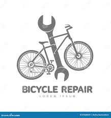

Tu bici, en las mejores manos

En el taller de BicisVal cuidamos cada bicicleta como si fuera nuestra. Contamos con un equipo técnico con años de experiencia que trabaja con herramientas profesionales y repuestos originales, para garantizar siempre el mejor resultado.
Realizamos desde mantenimientos básicos hasta reparaciones completas. Nuestro objetivo es que vuelvas a rodar lo antes posible, con tu bici en perfecto estado y total seguridad.
Tipos de reparaciones que realizamos

- Ajuste de frenos y cambios
- Cambio de cubiertas y cámaras
- Centrado y alineado de ruedas
- Sustitución de cadenas, piñones y platos
- Mantenimiento de suspensión delantera
- Engrase y limpieza completa
- Montaje de accesorios (portabultos, luces, sillines, etc.)
- Diagnóstico general y revisión de seguridad
¿Por qué elegir nuestro taller?

- ✔ Atención sin cita previa
- ✔ Presupuestos claros y sin compromiso
- ✔ Repuestos originales y de calidad
- ✔ Revisión gratuita con cada reparación
- ✔ Servicio rápido: en la mayoría de casos, en menos de 48 horas
Si necesitas ayuda o una revisión urgente, llámanos al 963 123 456 o pásate por nuestra tienda en la Calle de la Paz, 24.